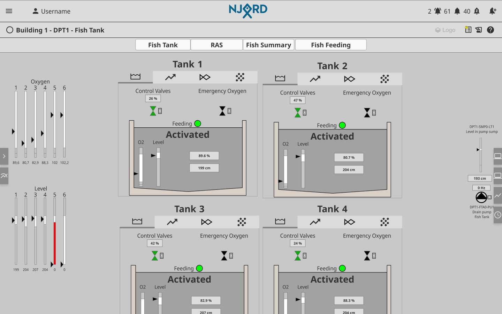
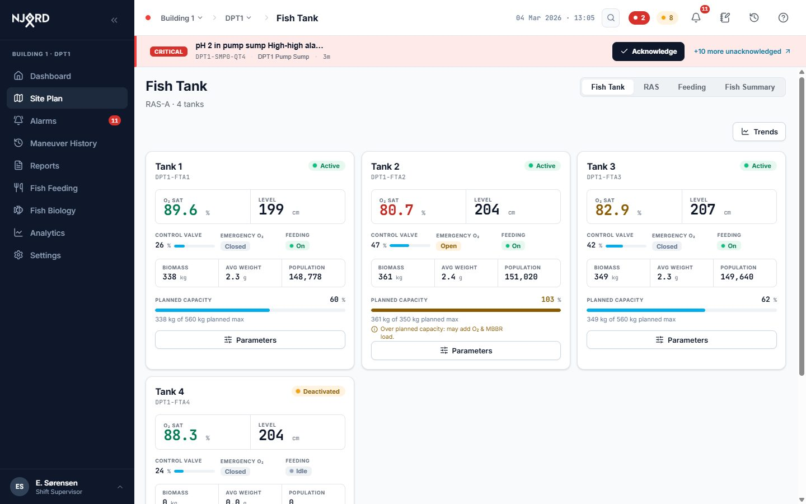
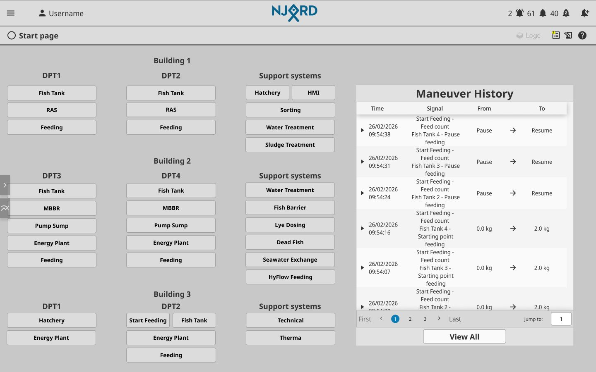
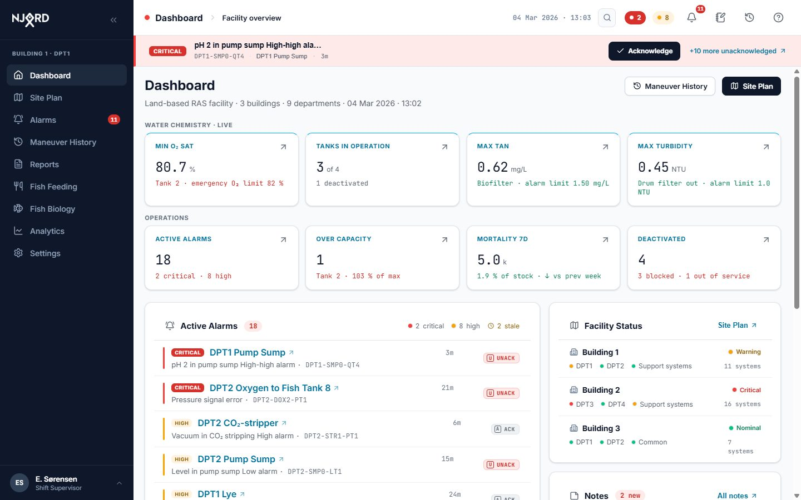
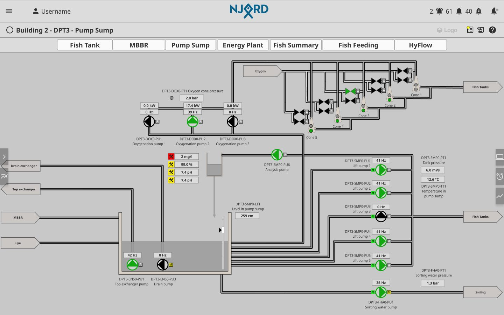
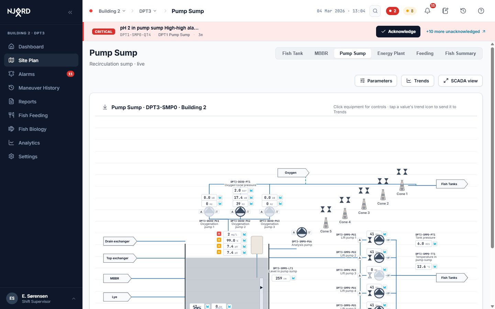

Case study · Industrial HMI / Operations Software
Rebuilding a SCADA system for Control Rooms
NJORD is the SCADA-grade system operators use to run a land-based Recirculating Aquaculture System: water chemistry, oxygenation, feeding, alarms and fish biology. The product already provided the necessary functionality; the challenge was reducing everyday friction so operators could find, understand and act on the right information faster. I started by investigating how people used NJORD and gathering direct user feedback, then redesigned the interface to remove recurring points of friction without changing the underlying process capability.
01
Context
A land-based RAS facility is a closed-loop fish factory. Water leaves a production tank carrying fish waste, passes through a drum filter, a biofilter that converts ammonia, a CO₂ stripper, a pump sump and an oxygenation stage, then returns to the tank, recirculating several times an hour. If oxygenation drops, a tank of fish can be lost in minutes. If the biofilter is disturbed, ammonia climbs over hours. None of it is optional, and a plant typically runs on one operator per shift.
NJORD is the software layer over that plant: an Ignition-based HMI/SCADA application covering process mimics, the alarm register, trend analysis, feeding control, biology registration and reporting. The redesign covers the operations web app: not the PLC layer, the historian, or the field devices.
The design challenge was narrow and hard at the same time: how do you redesign a safety-critical, information-dense industrial interface without removing the information operators depend on? And underneath that, a second constraint: the client runs facilities with different building counts, department layouts and process systems, so the redesign couldn't be built for one plant. It had to hold when the plant is shaped differently.
02
Research
Before redesigning anything, I ran a targeted UX survey with the client (15 respondents across operator, technician, fish-farmer, supervisor and engineering roles) and a UX review of the existing screens. The results were clear on one point first: NJORD's functional foundation was already good. Data access, the alarm system and day-to-day reliability all rated well. The problem was effort, not missing capability, so the redesign changed how the system is operated, not what it does.
The same six issues came up regardless of role, in the users' own words.
01
Too many clicks
Excessive steps, confirmations and delays in everyday workflows.
02
Difficult navigation
Reaching a system meant walking a nested menu tree every time.
03
Limited overview
Building a picture of the facility meant visiting screen after screen.
04
Weak trending
Trend tooling was unstable and inflexible for real investigation.
05
Poor mobile usability
Scaling and interaction on a phone worked badly in practice.
06
Lack of integrations
Disconnected from surrounding systems; the same data entered twice.


These six issues, not an abstract design critique, are what the rest of this case study responds to. §04 shows which decision answers which finding, and where a finding wasn't addressed at all.
The survey and review didn't produce a statistically significant sample; they produced recurring patterns credible enough to prioritise against. Treat the six issues above as diagnosed pain points, not measured incidence rates.
03
Design strategy
This wasn't a visual refresh. The work moved through five layers, in order: situation awareness, then information architecture, then interaction design, then the design system, then implementation constraints, because a decision at any layer could be overturned by a limit discovered at the next one.
- Overview before detail, and recognition over recall
- Abnormal conditions get visual priority: colour is spent, not decorated with
- One source of truth for every number on screen
- Explicit actions over "click anywhere" affordances
- Design around the operator's decision, not the data the system happens to store
- Configuration over hard-coded layout, so a different facility doesn't fork the product
- Accessibility and performance treated as product requirements, not late passes
Not every decision below traces back to a survey finding. Where the six issues didn't cover the territory, industrial-HMI standards did the deciding instead: ISA-18.2 for alarm lifecycle, ISA-101 for display hierarchy and colour discipline, WCAG 2.2 AA as the accessibility floor. Ignoring them would be malpractice. Following them without judgement would produce a screen from 1995. Most of the arguable decisions below were settled by reading the standard or by the survey, not by taste.
04
The design response
Six decisions carried most of the redesign's weight. Five map directly to a survey finding from §02; the other came from domain standards rather than user feedback. Each is shown as before → decision → after.
| Survey finding | Scope | Design response | Customer value |
|---|---|---|---|
| Too many clicks | Addressed | Shorter workflows and direct actions | Faster daily work |
| Difficult navigation | Addressed | Simplified navigation structure | Less time spent navigating |
| Limited overview | Addressed | Dashboard and improved information hierarchy | Quicker situational awareness |
| Weak trending | Addressed | Redesigned trend workflow and handling | Faster investigations |
| Poor mobile usability | Addressed | Responsive layouts and native interactions | Better field operations |
| Duplicate work | Future engineering work | Designed to support future integrations | Less manual work, when implemented |
| Frequent logouts | Backend / authentication | Not addressed (backend responsibility) | Transparent scope |
| Loading and lag | Engineering optimisation | Reduced unnecessary interactions | Less perceived waiting |
Decision 1 Responds to: Limited overview
The landing screen became a dashboard
The app used to open directly onto a system mimic that may have had nothing to do with the actual problem that shift. The redesign opens on a facility-wide overview: a KPI band against real configured limits, a severity-sorted active-alarm feed, a status-only building rollup, and a maneuver-history panel, the one part of the original screen that was already useful.


Decision 2 Responds to: Difficult navigation
Navigation became a map
The old "Navigation" item was a menu tree with no relationship to the physical plant. It's now a Site Plan: buildings as footprints, departments as zones, systems as nodes, with worst-status rolling up to department and building level. Operators already hold this layout in their heads (they walk it), so the map reuses a mental model instead of asking for a second, arbitrary one.
The important part doesn't show: the whole tree is drawn from one facility configuration structure. A site with four buildings and no hatchery produces a different map from the same code, which is what makes the product usable at the client's other facilities rather than just this one.
Decision 3 Responds to: Too many clicks, Weak trending
Alarm → trend became one interaction
This was the most expensive failure to fix and the most valuable. Previously, investigating an alarm meant reading the tag, memorising it, guessing which mimic owned it, navigating the menu tree, finding the sensor, and opening the trend module by hand.
Before: eight manual steps
After: one explicit action
Decision 4 Not a survey finding — ISA-101 colour discipline
Colour became a semantic system
Normal operation became deliberately neutral (dark grey for running, light grey for stopped), and colour was reserved entirely for abnormal conditions. This isn't an aesthetic preference; it's the High-Performance HMI grayscale doctrine, and it's why the redesigned mimics look "plainer" than the legacy screens while being faster to read at a glance.


Decision 5 Responds to: Poor mobile usability
Mobile became its own experience, not a shrunken desktop
A responsive desktop application stayed a responsive desktop application. The phone experience didn't: it's a separate layout built for a phone, not the desktop UI scaled down to fit one. Full-size touch targets, one task per screen, and the field tasks operators actually need out there, instead of a control-room screen shrunk until it's technically usable.
Decision 6 Not a survey finding — multi-site scalability
The system became configurable
One facility was designed in detail (three buildings, nine departments, real tag names) but treated as an example rather than a specification. Buildings, departments and systems all come from one facility structure; system screens resolve through a registry rather than a hard-coded route list; facility-wide equipment that belongs to no single building got its own honest place on the map instead of being forced into the hierarchy.
05
Design system
33 components across 8 groups, shared between the desktop console and the mobile companion.
The system was imported into the project before any screen work started, so tokens, type and component conventions existed as real, working files rather than a document someone had to remember. A theme is a variable remap rather than a parallel stylesheet, which is what let three themes (modern light, a dark night-shift skin, and a legacy skin for change management) stay in sync through the whole redesign.
Core
Buttons, inputs, cards, tabs, badges, tooltips
Alarms
State chips, severity ramp, bulk action bar, suppression controls
Data display
Trend charts, stat rows, tables, KPI tiles, distribution charts
SCADA
Nodes, pumps, valves, sensor boxes, ports, coded pipes, legends
Overlays
Equipment popup, parameter edit dialog, toasts, confirm dialogs
Navigation
Sidebar, top bar, site plan, breadcrumb, context picker
Forms
Filters, search, registration flows, role & user management
Mobile
Swipe row, pull-to-refresh, bottom sheet, tab bar
Only the mobile-specific and desktop-specific components fork; the alarm model, severity ramp and copy rules are identical across both, which is what keeps the two surfaces from quietly disagreeing with each other.
06
Designing within reality
Three constraints that changed decisions, not just execution.
Platform
Ignition / industrial SCADA
Client-side aggregation across hundreds of tags is expensive on this platform, and anything walking the whole equipment tree on screen load risks slowing every navigation. This alone killed a feature already built. See §07.
Data
What the plant can actually feed
The system doesn't record maneuver type, welfare bands, or backup-versus-primary oxygen tracking. Engineering feedback took features off the board repeatedly rather than adding them. Every removal is documented in §07.
Change management
Muscle memory in the legacy HMI
Operators have years of trained response in the old interface. A redesign that invalidates all of it during transition is a safety hazard, not just friction, which is the direct reason a legacy visual theme exists.
07
Not built
Not every idea survived contact with what the plant could actually support, and there are different reasons why I chose not to build specific features.
Removed
A per-system alarm banner on every process screen. Already built, already fixed of a routing bug, but summarising alarms per equipment meant walking the tag tree on every screen load, a cost paid forever to save a click the global annunciator already covered.
Removed
EEMUA target-benchmarking on the Statistics page. Well grounded in the alarm-management literature, and completely unbuildable: the platform has no mechanism to set the targets it would benchmark against.
Removed
Maneuver type classification (setpoint / state / override) in the audit log. Not derivable from the parameter model, and a wrong label in an audit trail is worse than none.
Removed
Welfare bands and a composite welfare score. Statistically improper for ordinal indicator data, and it would have hidden the one specific bad finding the record exists to surface.
Removed
Backup-versus-primary oxygen tracking. The plant doesn't track it. Replaced with the state that actually exists: whether the emergency oxygen valve is open or closed.
Removed
Animated flow on mimic pipes. Attractive, but rejected because it would falsely draw attention, since it isn't a marker for an abnormal condition.
08
Outcome
What was actually delivered, kept separate from what would still need to be measured.
Delivered and verifiable in the build itself: count disagreement across screens is now architecturally impossible rather than merely tested for; every screen shares one shell, one table pattern, one dialog pattern; fluid colours and their legends live in one registry so they can't drift apart; facility structure, system screens and utilities are all configuration rather than hard-coded layout; a cross-theme accessibility sweep covering 1,980 text nodes across three themes came back at zero AA contrast failures after seven fixes.
09
Reflection
The strongest part of this work wasn't adding more functionality. It was deciding what the product should make visible, what it should leave out, and what needed to become structurally consistent: one alarm register instead of five places counting the same thing, one facility model instead of a screen set that only worked for one plant.
This case study reconstructs the design process from the project's working record. Sections describing inferred context (personas, facility scale, operator headcount) are flagged as assumptions rather than findings throughout the source material. No third-party audit against ISA-18.2, ISA-101 or WCAG 2.2 has been performed on the prototype.